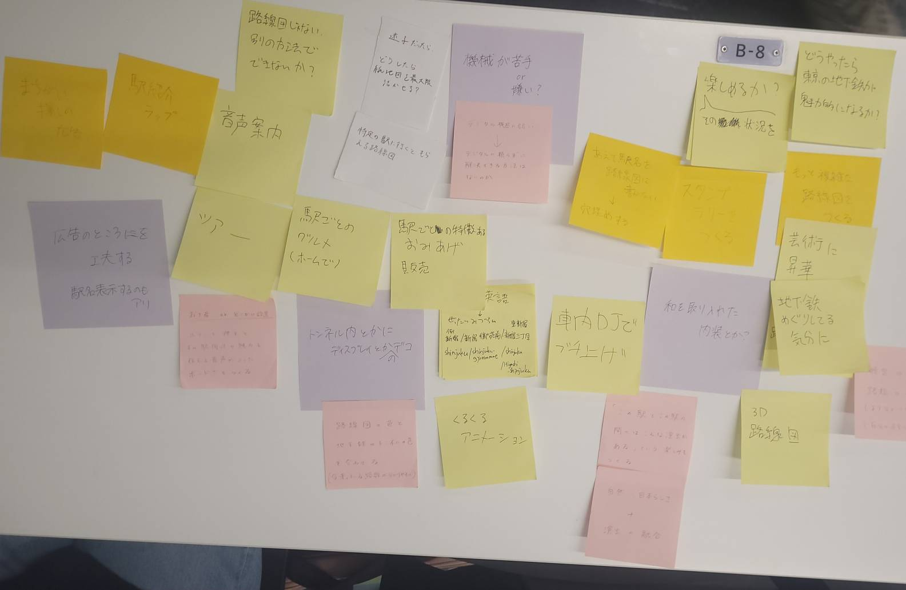
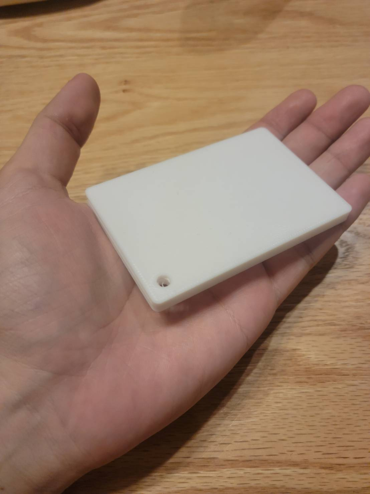
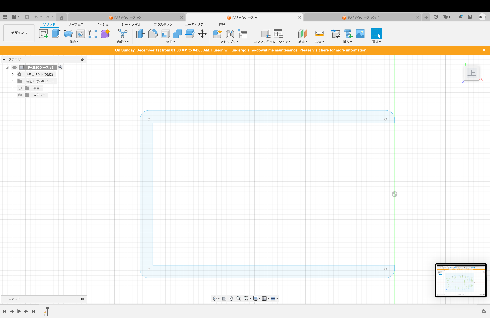
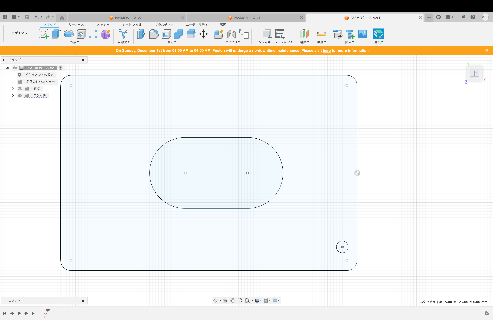
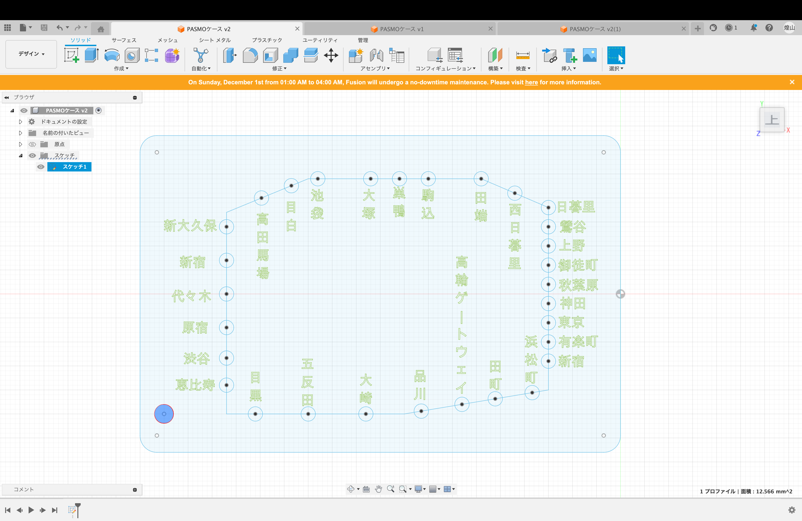
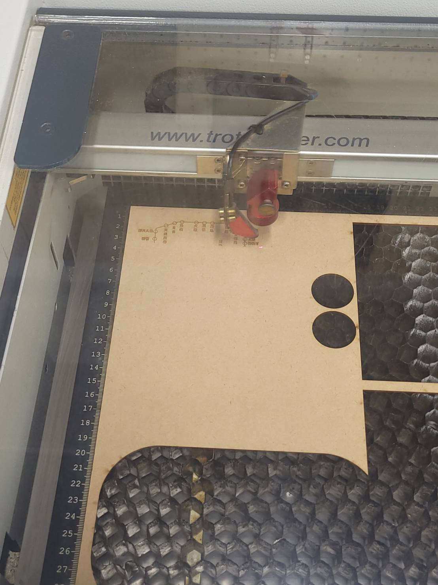
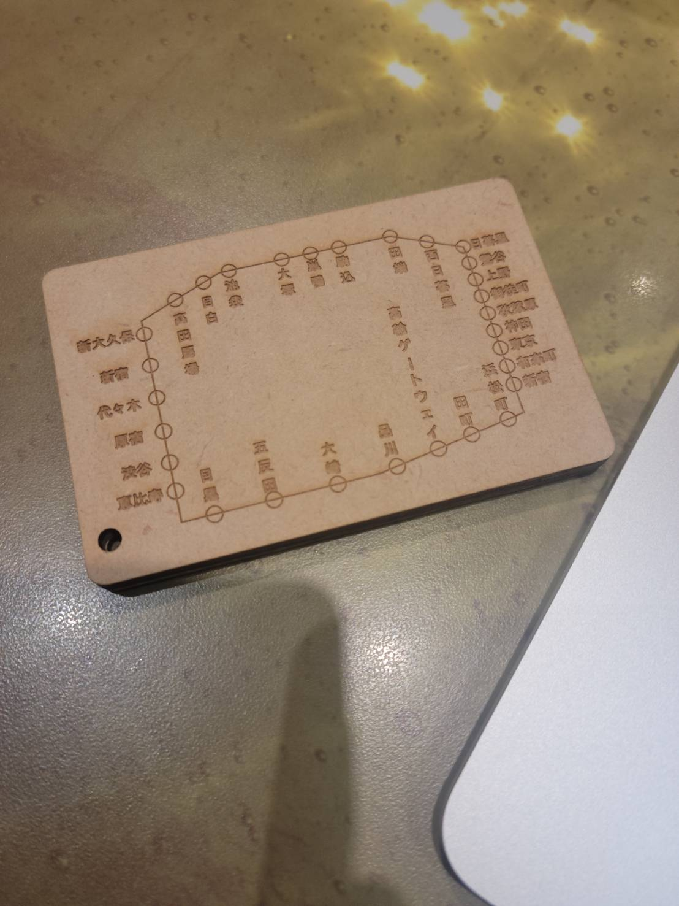
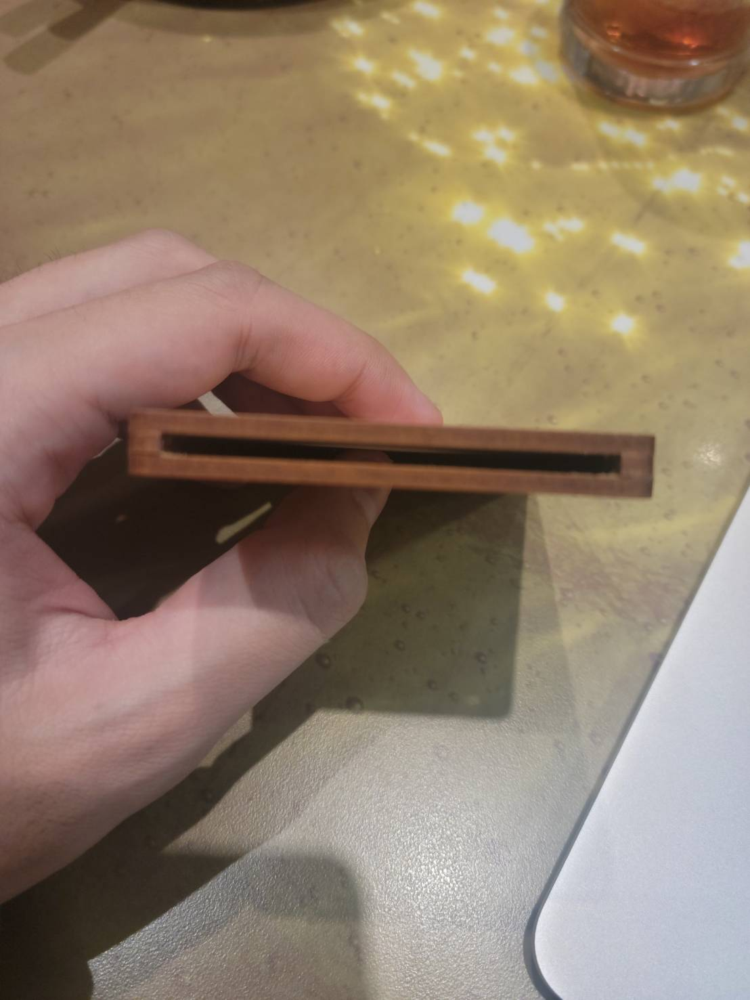
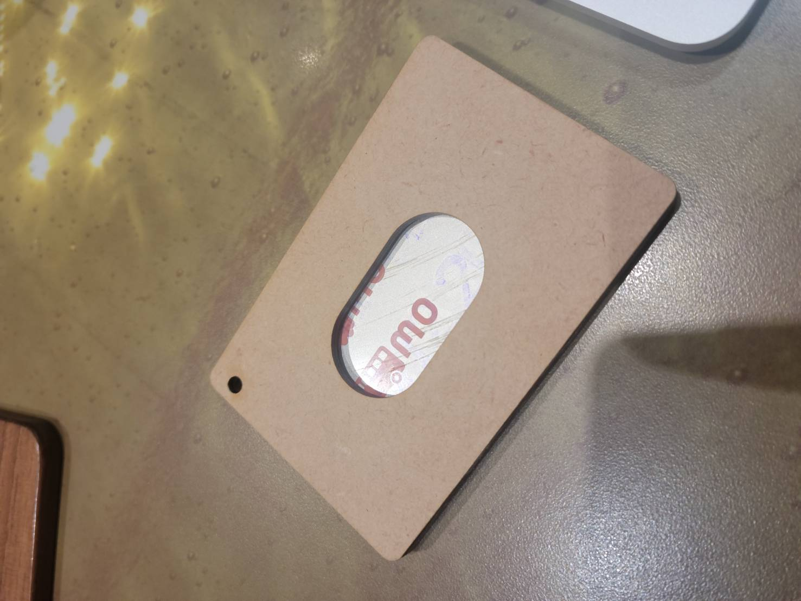

design for others
班内での構想
僕たちの班では、電車の中で大きくて複雑な路線図を広げている外国の男性に
ターゲットを絞って案を出し合ってみました。

班で話し合った結果、僕は、路線図としての機能を持ち合わせ、さらに外国人向けに
お土産になるものを考えました。そこで僕は路線図を彫刻したパスもケースを作るこ
とにしました。彫刻する路線図は、とりあえず都心の観光地を巡りやすい山手線にし
ました。
プロトタイプ
早速、作るものの決まった僕は、プロトタイプを制作しました。

実際に作ってみると、もう少し大きくていい気もしましたが、とりあえず機能してそれっぽいものはできました。
本番
早速プロトタイプをもとに本番に取り掛かりました。
  
ここで気づいたのですが、fusionでの文字の入力データをイラストレイターに反映させるには、
文字を打ったボディから文字を分解しないといけないみたいです。友達が失敗して気づきました。
印刷
イラストレイターに移したデータをレイザーカッターで出力します。

出てきたパーツをボンドで組み立てて
  
完成
感想
今回は、個人的にかなり満足だった。しかし、本来のdesign for othersという観点で見ると、
外国人向けに作ったつもりが路線図の文字が全て漢字であるというアホなミスに気づいてしまいました。
今回は見ないことにして次回に活かしたいです。